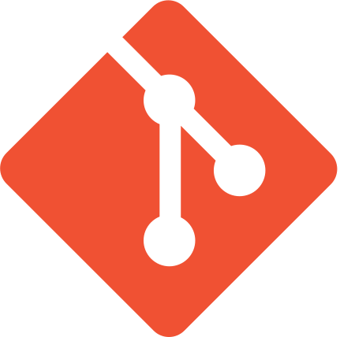
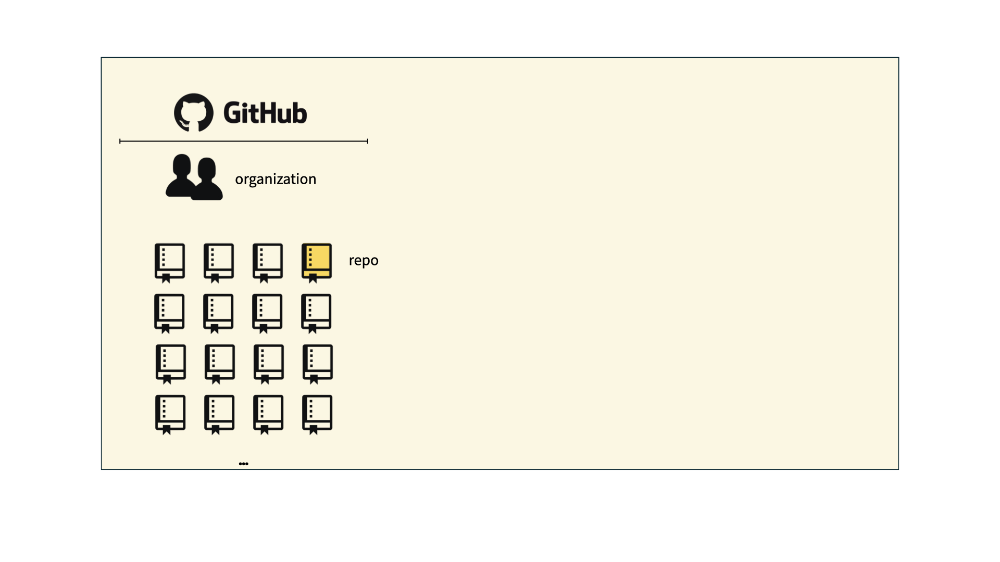
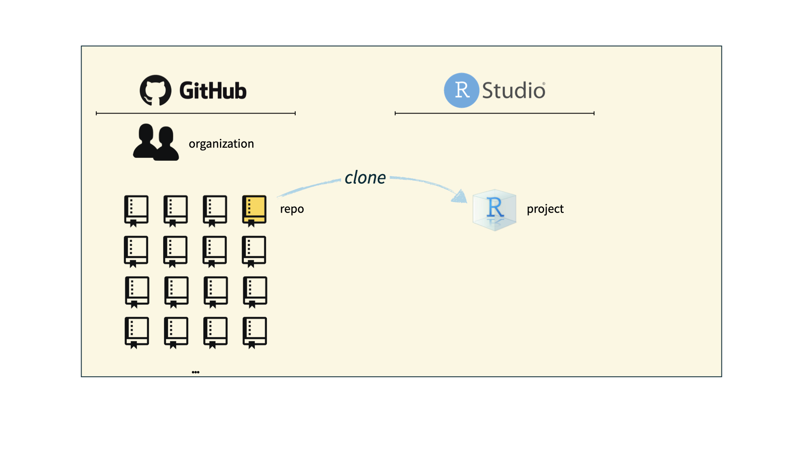

Meet the toolkit
Lecture 1
Warm-up
Announcements
If you have not yet completed the Getting to know you survey, please do so asap!
If you have not yet accepted the invite to join the course GitHub Organization (I’m looking at 25 of you as of this morning!), please do so asap!
Additional resource
Peer tutoring
More info at https://sta199-f24.github.io/course-support.html#peer-tutoring
Five tips for success
Complete all the preparation work before class.
Ask questions.
Do the readings.
Do the lab.
Don’t procrastinate – at least on a weekly basis!
Course toolkit
Course toolkit
Course operation
- Materials: sta199-f24.github.io
- Submission: Gradescope
- Discussion: Ed Discussion
- Gradebook: Canvas
Doing data science
- Computing:
- R
- RStudio
- tidyverse
- Quarto
- Version control and collaboration:
- Git
- GitHub
Toolkit: Computing
Learning goals
By the end of the course, you will be able to…
- gain insight from data
- gain insight from data, reproducibly
- gain insight from data, reproducibly, using modern programming tools and techniques
- gain insight from data, reproducibly and collaboratively, using modern programming tools and techniques
- gain insight from data, reproducibly (with literate programming and version control) and collaboratively, using modern programming tools and techniques
Reproducible data analysis
Reproducibility checklist
What does it mean for a data analysis to be “reproducible”?
. . .
Short-term goals:
- Are the tables and figures reproducible from the code and data?
- Does the code actually do what you think it does?
- In addition to what was done, is it clear why it was done?
. . .
Long-term goals:
- Can the code be used for other data?
- Can you extend the code to do other things?
Toolkit for reproducibility
- Scriptability \(\rightarrow\) R
- Literate programming (code, narrative, output in one place) \(\rightarrow\) Quarto
- Version control \(\rightarrow\) Git / GitHub
R and RStudio
R and RStudio

- R is an open-source statistical programming language
- R is also an environment for statistical computing and graphics
- It’s easily extensible with packages

- RStudio is a convenient interface for R called an IDE (integrated development environment), e.g. “I write R code in the RStudio IDE”
- RStudio is not a requirement for programming with R, but it’s very commonly used by R programmers and data scientists
R vs. RStudio

Source: Modern Dive.
R packages
Packages: Fundamental units of reproducible R code, including reusable R functions, the documentation that describes how to use them, and sample data1
As of 27 August 2024, there are 21,168 R packages available on CRAN (the Comprehensive R Archive Network)2
We’re going to work with a small (but important) subset of these!
1 Wickham and Bryan, R Packages.
Tour: R + RStudio
Option 1:
Sit back and enjoy the show!
Option 2:
Go to your container and launch RStudio.
Tour recap: R + RStudio

A short list
(for now)
of R essentials
Packages
- Installed with
install.packages(), once per system:
install.packages("palmerpenguins")
Note
We already pre-installed many of the package you’ll need for this course, so you might go the whole semester without needing to run install.packages()!
. . .
- Loaded with
library(), once per session:
library(palmerpenguins)Packages, an analogy
If data analysis was cooking…
Installing a package would be like buying ingredients from the store
Loading a package would be like getting the ingredients out of your pantry and setting them on your counter top to be used
tidyverse
aka the package you’ll hear about the most…

- The tidyverse is an opinionated collection of R packages designed for data science
- All packages share an underlying philosophy and a common grammar
Data frames and variables
- Each row of a data frame is an observation
. . .
- Each column of a data frame is a variable
. . .
- Columns (variables) in data frames can be accessed with
$:
dataframe$variable_namepenguins data frame
bill_length_mm
flipper_length_mm
First, run the code below and read the error. Then, fix the code to access the flipper_length_mm variable in the penguins data frame.
function(argument)
Functions are (most often) verbs, followed by what they will be applied to in parentheses:
do_this(to_this)
do_that(to_this, to_that, with_those)trimmed mean()
Help
Object documentation can be accessed with ?
?meanA pause – Common birthdays
I cleaned up your data!
. . .
No thanks to the people who responded ‚Äúyo‚Äù or ‚ÄúThe fifth day in the month of October!!‚Äù or ‚Äúmay twentieth‚Äù! ü§£
. . .
Dates with more than one student with a birthday:
# A tibble: 65 × 2
birthday n
<chr> <int>
1 04-05 4
2 04-15 4
3 05-20 4
4 06-18 4
5 10-25 4
6 01-24 3
7 03-15 3
8 03-29 3
9 04-19 3
10 04-22 3
11 05-15 3
12 06-25 3
13 07-26 3
14 08-29 3
15 09-11 3
16 11-19 3
17 12-20 3
18 01-07 2
19 01-08 2
20 01-13 2
21 01-20 2
22 01-21 2
23 01-23 2
24 01-25 2
25 01-27 2
26 02-07 2
27 02-18 2
28 03-07 2
29 03-14 2
30 03-16 2
31 03-22 2
32 03-23 2
33 03-28 2
34 03-30 2
35 04-06 2
36 04-12 2
37 05-01 2
38 05-05 2
39 05-11 2
40 05-12 2
41 05-28 2
42 05-30 2
43 06-02 2
44 06-04 2
45 06-28 2
46 07-22 2
47 08-09 2
48 08-16 2
49 09-04 2
50 09-15 2
51 09-17 2
52 09-19 2
53 09-28 2
54 09-30 2
55 10-12 2
56 10-14 2
57 10-28 2
58 11-03 2
59 11-06 2
60 11-07 2
61 11-14 2
62 11-16 2
63 11-17 2
64 11-21 2
65 12-03 2Toolkit: Version control and collaboration
Git and GitHub

- Git is a version control system – like “Track Changes” features from Microsoft Word, on steroids
- It’s not the only version control system, but it’s a very popular one

GitHub is the home for your Git-based projects on the internet – like DropBox but much, much better
We will use GitHub as a platform for web hosting and collaboration (and as our course management system!)
Versioning - done badly

Versioning - done better

Versioning - done even better
with human readable messages

How will we use Git and GitHub?
How will we use Git and GitHub?

How will we use Git and GitHub?

How will we use Git and GitHub?
Git and GitHub tips
- There are millions of git commands – ok, that’s an exaggeration, but there are a lot of them – and very few people know them all. 99% of the time you will use git to add, commit, push, and pull.
- We will be doing Git things and interfacing with GitHub through RStudio, but if you google for help you might come across methods for doing these things in the command line – skip that and move on to the next resource unless you feel comfortable trying it out.
- There is a great resource for working with git and R: happygitwithr.com. Some of the content in there is beyond the scope of this course, but it’s a good place to look for help.
Tour: Git + GitHub
Option 1:
Sit back and enjoy the show!
Note
You’ll need to stick to this option if you haven’t yet accepted your GitHub invite and don’t have a repo created for you.
Option 2:
Go to the course GitHub organization and clone ae-your_github_name repo to your container.
Tour recap: Git + GitHub
Find your application repo, that will always be named using the naming convention
assignment_title-your_github_nameClick on the green “Code” button, make sure SSH is selected, copy the repo URL
Tour recap: Git + GitHub
- In RStudio, File > New Project > From Version Control > Git
- Paste repo URL copied in previous step, then click tab to auto-fill the project name, then click Create Project
- For one time only, type
yesin the pop-up dialogue
What could have gone wrong?
Never received GitHub invite \(\rightarrow\) Fill out “Getting to know you survey
Never accepted GitHub invite \(\rightarrow\) Look for it in your email and accept it
Cloning repo fails \(\rightarrow\) Review/redo Lab 0 steps for setting up SSH key
Still no luck? Come by my office today (Thursday, 8/29) between 4-5pm or post on Ed for help
Quarto
Quarto
- Fully reproducible reports – each time you render the analysis is ran from the beginning
- Code goes in chunks narrative goes outside of chunks
- A visual editor for a familiar / Google docs-like editing experience
Tour: Quarto
Option 1:
Sit back and enjoy the show!
Note
If you chose (or had to choose) this option for the previous tour, or if you couldn’t clone your repo for any reason, you’ll need to stick to this option.
Option 2:
Go to RStudio and open the document ae-01-meet-the-penguins.qmd.
Tour recap: Quarto

Tour recap: Git + GitHub
Once we made changes to our Quarto document, we
went to the Git pane in RStudio
staged our changes by clicking the checkboxes next to the relevant files
committed our changes with an informative commit message
pushed our changes to our application exercise repos
confirmed on GitHub that we could see our changes pushed from RStudio
How will we use Quarto?
- Every application exercise, lab, project, etc. is an Quarto document
- You’ll always have a template Quarto document to start with
- The amount of scaffolding in the template will decrease over the semester
What’s with all the hexes?

We have hexes too!
Grab one before you leave!